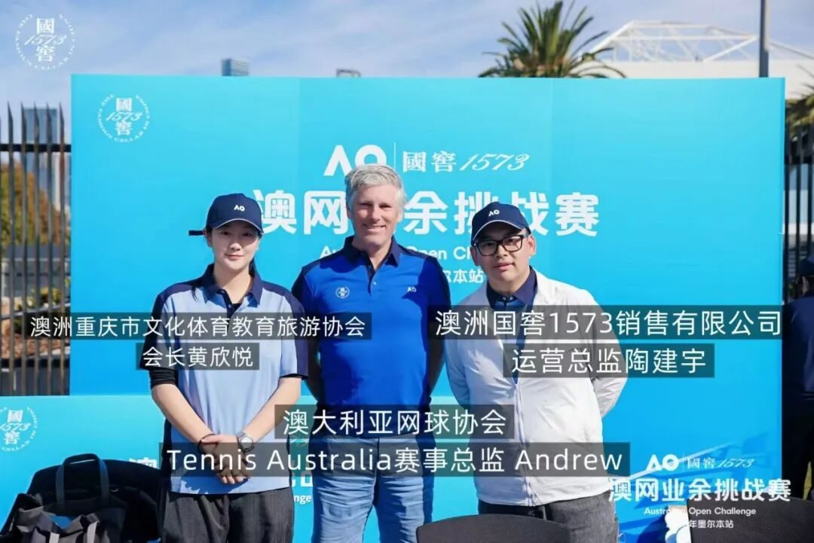

澳洲川渝文化教育体育协会走进澳洲国家网球中心｜从一场赛事对话，看体育如何连接城市、产业与中澳交流
黄欣悦会长与 Tennis Australia 赛事总监 Andrew现场交流，共话全民网球、中国市场、体育IP与墨尔本城市产业生态。
近日，澳洲川渝文化教育体育协会主席黄欣悦走进位于墨尔本的 National Tennis Centre，在澳网业余挑战赛赛事现场，与 Tennis Australia Tournament Director Andrew 展开现场交流。

从正在发生的一场网球赛事出发，两人的谈话并没有停留在比赛本身。
从全民体育、中国网球与华人社区，到 Australian Open、F1、Melbourne Cup 等世界级赛事如何共同构成墨尔本的城市名片，再到体育IP如何连接品牌、消费、旅游、媒体与国际商务，这场发生在球场边的交流逐渐指向一个更大的问题：
当体育真正进入一座城市，它究竟能够连接什么？
黄欣悦：体育交流不能只停留在“看比赛”，更应该成为人与城市发生关系的入口。
交流中，黄欣悦首先从当天赛事的现场体验谈起。
作为长期参与网球运动、体育项目及中澳交流工作的青年代表，她特别关注到，这类赛事与职业竞技最大的不同，在于它让不同水平、年龄与背景的人真正进入同一套体育生态。
有人为了晋级认真比赛，有人为了体验而来；有人是成熟选手，也有人仍在学习比赛与执裁。
体育在这里不是少数专业运动员拥有的舞台，而是一种公共参与方式。
黄欣悦提出，对于在澳华人及年轻一代而言，体育其实可以成为进入澳大利亚社会非常自然的入口。相比传统会议、宴会或正式交流，球场上的关系更加直接。不同文化背景的人不需要先解释彼此是谁，就可以因为一场比赛、一家俱乐部或一次训练建立最初的连接。
这也与澳洲川渝文化教育体育协会近年来持续探索的方向一致：
文化交流不只是“展示中国文化”，体育交流也不应该只是“组织大家来看一场比赛”。
真正长期的交流，应当让人参与进去。
Andrew：网球的魅力，恰恰在于“属于每一个人”
对于这一观察，Andrew从赛事运营者的角度给出了回应。
谈及当天赛事，他首先强调的并不是竞技成绩，而是参与本身。现场既有认真争取晋级机会的选手，也有享受比赛过程的参与者，不同水平、不同年龄和不同性别的人共同进入球场。
他说：
“It’s a sport for everyone.”
在他看来，一个人可以从很小的时候开始接触网球，也可以一直参与到老年。
一支球拍、一片球场，把球击过球网，这项运动就已经开始。
当天赛事同时安排了不同经验水平的 chair umpires 参与执裁。Andrew介绍，相对轻松、节奏更快的赛事环境，也能够为年轻裁判提供训练和积累经验的机会。
因此，一场赛事真正培养的并不只有运动员。
运动员、裁判、赛事组织者、志愿者、观众与社区，共同构成了体育生态。
黄欣悦从自己的成长经历谈到中国网球代表人物李娜，并向Andrew提出：
从国际赛事组织者的视角来看，这些年来中国观众、中国球员以及中国市场与世界网球之间的关系发生了什么变化？
Andrew回忆起自己数年前在中国参与网球活动的经历。
在他看来，中国与国际网球之间的连接近年来已经发生明显变化。李娜等运动员曾经让大量中国观众第一次真正关注国际网球，而随着全球体育传播方式变化，越来越多中国年轻人正在通过赛事、社交媒体、社区体育和海外生活进入这项运动。
而网球本身，就是一种天然具有全球属性的运动。
对于生活在澳大利亚的华人社区，Andrew给出的建议非常直接：
走进球场。
除了 Australian Open 这样的世界级赛事，澳大利亚还有大量社区俱乐部、公共球场与休闲体育设施。不同年龄、不同性别、不同文化背景的人，都可以通过这些基层网络进入网球。
这也让双方找到一个共同判断：
中澳体育交流不一定首先从一场大型国际项目开始。一家俱乐部与另一家俱乐部、一个青少年团队与另一个青少年团队、一场社区赛事与一次教练交流，都可能成为长期关系真正开始的地方。
黄欣悦追问：为什么墨尔本可以把“体育”做成一座城市的产业？
黄欣悦提出了此次交流中一个重要的问题：
墨尔本拥有 Australian Open、Formula 1 Australian Grand Prix、Melbourne Cup，以及 Australian Rules Football、Rugby、Football 等大量体育资源。
这些赛事不仅存在于体育版面，也持续进入旅游、消费、酒店、餐饮、媒体、城市营销和商业合作。
对于正在探索体育、文化与国际交流融合路径的协会而言，这个问题尤其重要。黄欣悦表示，川渝地区同样拥有庞大的人口基础、年轻消费群体、体育参与需求与城市文旅资源。
因此，研究墨尔本并不是简单复制某一场赛事，而是理解：
一座城市如何让赛事留下来，又如何让赛事之外的价值继续生长。
Andrew 对此给出了一个很有代表性的表达：
“Sport is such a vehicle.”
体育是一种载体。
它承载的不只是比赛，也能够打开品牌、市场与公众之间原本不存在的连接。
Andrew 结合 Australian Open 的发展谈到，一些国际品牌过去并不为澳大利亚主流消费者广泛熟悉，但通过体育赛事、场馆合作和长期曝光，逐渐进入公众视野。
双方在交流中特别谈到了 1573 Arena。
当一个品牌持续进入赛事场景，它最终承载的就不再只是一次广告曝光。场馆名称被观众一次次说出，被媒体一次次记录，被赛事记忆不断重复，品牌也由此成为整个体育体验的一部分。
黄欣悦由此进一步提出，体育IP真正值得研究的，正是它背后不断延伸的价值链：赛事 → 场馆 → 观众 → 媒体 → 旅游 → 品牌 → 消费 → 城市形象
一场大型体育赛事所产生的价值，很难仅仅通过门票收入衡量。它可能带来酒店住宿、餐饮消费、交通出行、媒体传播、国际游客、商业赞助以及新的城市认知。比赛有结束时间，但体育IP产生的城市价值可以继续发生。
从墨尔本经验出发，寻找川渝与澳洲体育合作的新接口。
黄欣悦表示，此次交流对于协会而言，并不是一次单纯的赛事采访。
澳洲川渝文化教育体育协会所关注的，是如何把澳大利亚成熟的体育生态，与川渝地区的青年、教育、城市、文旅和产业资源形成更加具体的连接。
未来双方可以探索的，不只是“邀请谁来看比赛”，而可能包括：
青少年体育交流、川渝与澳洲俱乐部合作、教练与赛事人才交流、社区体育项目、体育文旅、国际赛事交流、体育品牌合作，以及围绕体育IP形成的商业与城市传播项目。尤其对于年轻一代而言，体育可能成为一种比传统交流模式更加自然的共同语言。先因为一颗球认识，再因为教育、文化、城市甚至商业产生新的合作。
这也正是协会希望推动的交流方式：
从一次访问，走向长期参与；从一次认识，走向共同做一件事。
黄欣悦：墨尔本值得研究的，不只是一场澳网，而是它如何让体育进入城市日常。
交流中，黄欣悦表示，墨尔本最值得观察的并不仅仅是拥有多少世界级赛事。真正值得研究的是：体育已经进入这座城市的基础设施、社区生活、商业系统和文化身份。
世界级赛事提供城市影响力，社区俱乐部提供日常参与，青少年体系不断培养新的参与者，而品牌、媒体、旅游和商业又围绕这些体育资源形成新的产业关系。
这意味着体育并不是一座城市偶尔举办的“大事件”。
它本身就是城市运行方式的一部分。对于川渝与澳洲未来的体育交流而言，这也提供了新的思考：与其只复制一场大型赛事，不如进一步探索如何建立长期参与机制，让体育真正连接青年、社区、教育、城市和产业。
下一场对话，黄欣悦把“会议桌”搬到了球场上。
交流最后，黄欣悦向Andrew发出了一个特别的邀请。
协会正在探索一种新的体育交流形式：把传统会议桌搬到球场。未来，希望邀请来自体育、城市治理、教育、商业、文化及公共事务等不同领域的嘉宾，在真实的运动场景中完成对话。
不是坐下来接受一场标准采访。
而是一边打球，一边谈城市、产业、社区与人的故事。
Andrew本人也在交流中表示自己会打一些网球。
于是，一次发生在场边的采访，也留下了下一次见面的方式：下一次，我们球场上聊。
因为体育本身就是一种语言。它不要求参与者拥有相同的职业、年龄、文化背景甚至母语。
一颗球越过球网，对话就已经开始。
澳洲川渝文化教育体育协会
Culture · Sports · Education · Tourism
连接川渝与澳洲，让交流从“认识”走向“共同参与”。
澳洲川渝文化教育体育协会秘书处
9月21日